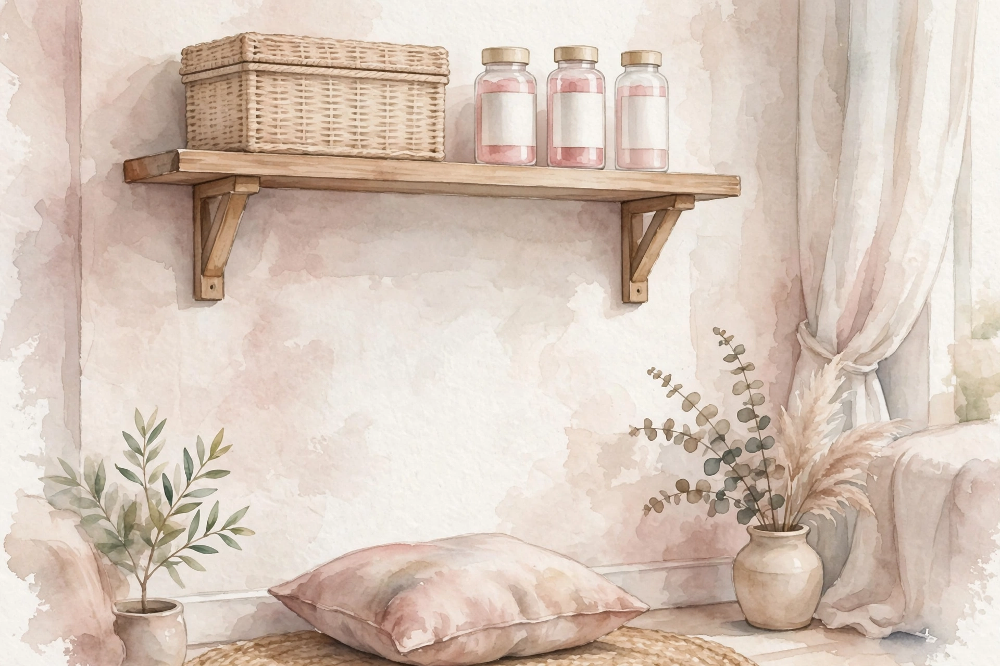
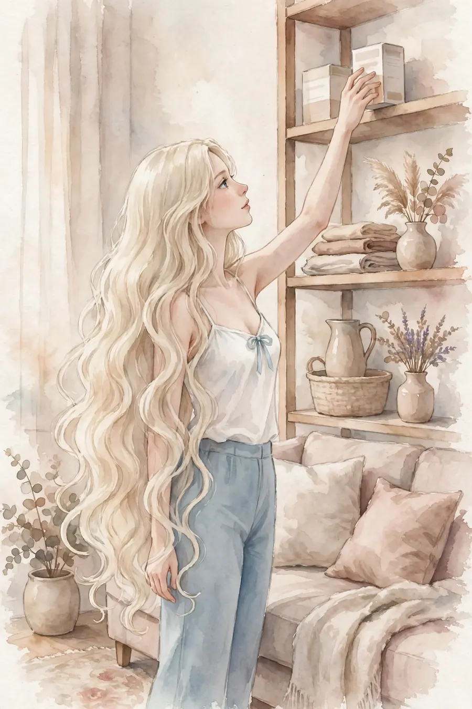

トップ ＞ インナーケア・サプリ ＞ ペットのいる家庭での保管場所の注意
ペットのいる家庭での保管場所の注意

犬や猫と暮らしている家庭では、サプリメントの置き場所に、もうひとつ条件が加わります。「ペットの届かない場所」です。人にとっての食品でも、ペットにとっては想定外のものです。この記事では、ペットのいる家庭での保管場所の注意点を整理します。
基本は「届かない高さ」と「扉のある場所」
保管場所の基本は、ペットが届かない高さにあり、扉や蓋で仕切られた場所です。テーブルの上や棚の低い段は、猫が上る場所でもありますし、犬が背伸びをして届くこともあります。「いつもは届かない」ではなく、「絶対に届かない」場所を選んでください。
ピルケースを使う場合は、蓋が確実に閉まるものを選び、置き場所も同じ基準で決めます。ケースは軽いため、落とされると中身が散らばることもあります。ケースごと、届かない場所に置くのが基本です。
落とした粒と、カバンの中にも注意
飲むときに床へ落とした粒は、その場で拾う習慣をつけてください。小さな粒は家具の下に入り込み、後からペットが見つけることがあります。数えながら出す飲み方は、落としたことにも気づきやすくなります。
持ち運び用のポーチも、チャックや留め具のあるものを選びます。カバンの中に裸のケースを入れておくと、カバンをあさる習慣のあるペットには届いてしまいます。外出用の分も、家の中では届かない場所に保管するのが安全です。
もし口にしてしまったら
備えをしていても、事故が起きることはあります。ペットがサプリメントを誤って口にしてしまった場合は、慌てて自己判断で対処せず、商品のパッケージを持って、かかりつけの獣医師に相談してください。何を・どれくらい口にしたかが分かる情報が、そのまま役立ちます。
人のサプリメントは人の表示で作られた食品です。ペットと暮らす家庭では、保管場所の基準をひとつ上げることが、人とペットの双方の安心につながります。置き場所の見直しは、今日の棚から始められます。
置き場所の見直しは、節目ごとに
保管場所は、一度決めたら終わりではありません。ペットを新しく迎えたとき、模様替えで家具の配置が変わったとき、ペットが成長して届く範囲が広がったとき。こうした節目ごとに、置き場所が基準を満たしているかを見直してください。来客時に、普段と違う場所へ一時的に置いたケースの置き忘れも、起こりやすい場面です。
子どものいる家庭では、子どもとペットの両方の手や口が届かない場所という、二重の基準になります。家族全員で置き場所のルールを共有しておくことも大切です。誰か一人が気を付ける仕組みより、置き場所そのもので守る仕組みの方が、長く続きます。
保管場所を決めたら、その場所に「サプリ専用」の小さな箱やケースを用意すると、家族にも分かりやすくなります。お菓子やペットのおやつと見た目が近いものは、棚の段そのものを分けるのが確実です。表示の保管条件（高温多湿を避けるなど）と、ペットの届かない場所という条件を、両方満たす場所を探してください。
ペットがサプリメントを誤って口にした場合は、自己判断で様子を見ず、商品のパッケージを持って獣医師にご相談ください。
置き場所のルールは、家族の生活動線に沿って決めるのが現実的です。飲む場所と保管場所が離れすぎていると、飲んだ後のケースを手近な場所に置いてしまうことがあります。飲む場所の近くで、かつペットの届かない場所。その両方を満たす場所を、家の中で探してください。
キャットタワーや家具の配置で、ペットの動線は変わります。「昨日まで届かなかった場所」が、今日は届く場所になっていることもあるため、高い場所というだけではなく、扉や蓋の仕切りと組み合わせることが大切です。

セラフィナ「ペットのいる家は、置き場所がひとつ大事になるね。届かない場所が合言葉だよ」